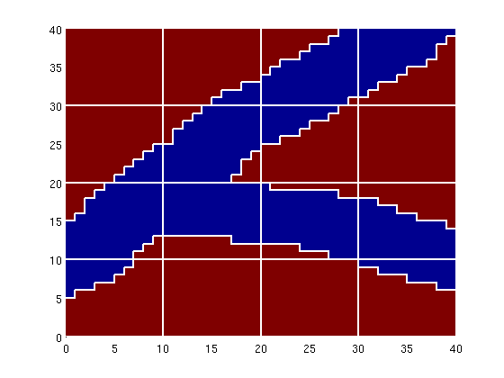
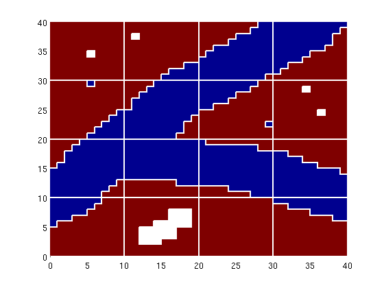
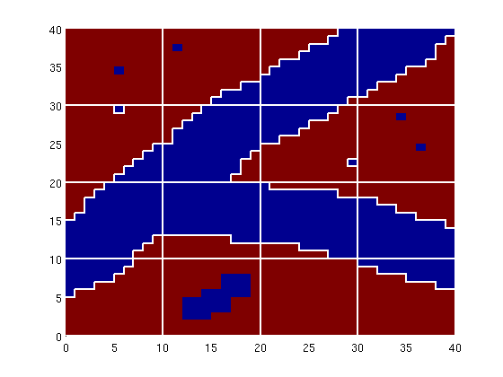
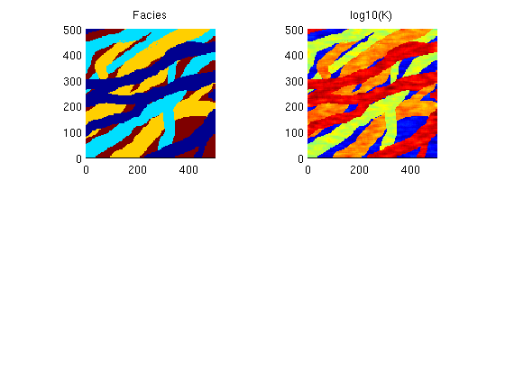
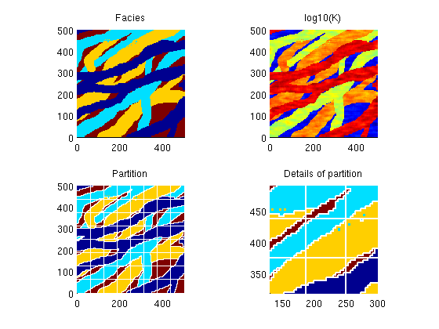

Contents
Example 2: Constrained coarsening
In this example we discuss how to use additional geological information to perform constrained coarsening.
References:
- V. L. Hauge, K.-A. Lie, J. R. Natvig, Grid coarsening based on amalgamation for multi-fidelity transport solvers, September 2010, http://www.sintef.no/Projectweb/GeoScale/Publications/
try require coarsegrid catch me mrstModule add coarsegrid; end
Model with two facies
As a first case, we consider 40x40 fine grid for which the image 'facies1.png' represents some geological object that is defined on a background. In our gridding, we will make sure that the object is represented also in the coarse model. To this end, we will partition the grid into a uniform 5x5 coarse grid and in addition preserve the edges of the object.
exdir = fileparts(mfilename('fullpath')); if isempty(exdir), exdir = pwd; end imload = @(fn) ... flipud(double(sum(imread(fullfile(exdir, 'data', fn)), 3))) .'; f = imload('facies1.png'); G = computeGeometry(cartGrid(size(f)) ); ps = compressPartition(f(:) + 1); clear f; pu = partitionUI(G, [4 4]); [b,i,p] = unique([ps, pu], 'rows'); p = processPartition(G, p); clf, plotCellData(G, ps); outlineCoarseGrid(G, p, 'w');
Let us now consider the same model, but with some 'noise' added outside the main object, which may or may not lead to confined blocks, i.e., blocks that are completely contained within another block. The confined blocks are marked in white color in the plot below.
f = imload('facies2.png'); ps = compressPartition(f(:) + 1); clear f; [b,i,p] = unique([ps, pu], 'rows'); %#ok<*ASGLU> p = processPartition(G, p); blks = findConfinedBlocks(G, p); clf, plotCellData(G, ps); outlineCoarseGrid(G, p, 'w'); for i=1:numel(blks), plotGrid(G,find(p==blks(i)),'FaceColor','w','edgecolor','none') end
Such blocks should be detected and removed. If a block only has a single neighbour, it will have only one coarse face. This means that the block will effectively represent an obstacle to flow inside the domain in an incompressible flow simulation using net fluxes on the coarse grid.
[blks, p] = findConfinedBlocks(G, p);
clf,
plotCellData(G, ps);
outlineCoarseGrid(G, p, 'w');
 Model with four facies
As our next case, we consider a reservoir in which we have four different facies that are read from a png-image. For each facies, we generate a different lognormal permeability distribution.
f = imload('facies3.png'); G = computeGeometry(cartGrid(size(f), [500 500])); k = logNormLayers([size(f) 4],[800 50 200 1]); [b,i,j] = unique(f); num=1:length(b); facies = num(j).'; K = k( (1:numel(facies))' + (facies-1)*numel(facies)); rock.perm = K(:); rock.poro = 0.2*ones(size(K)); clear f k; clf, subplot(2,2,1) plotCellData(G, facies), axis equal tight, title('Facies') subplot(2,2,2) plotCellData(G,log10(rock.perm)), axis equal tight, title('log10(K)')
The facies distribution contain some speckles which one should be careful to get rid of as shown in the lower-right plot
pu = partitionUI(G, [8 8]); [b,i,p] = unique([pu, facies], 'rows'); p = processPartition(G, p); [b, p] = findConfinedBlocks(G, p); subplot(2,2,3), cla plotCellData(G,facies), axis equal tight, title('Partition'); h=outlineCoarseGrid(G,p,'w'); set(h,'LineWidth',1); subplot(2,2,4), cla plotCellData(G,facies), axis equal tight, title('Details of partition'); outlineCoarseGrid(G,p,'w'); axis([130 300 320 490])